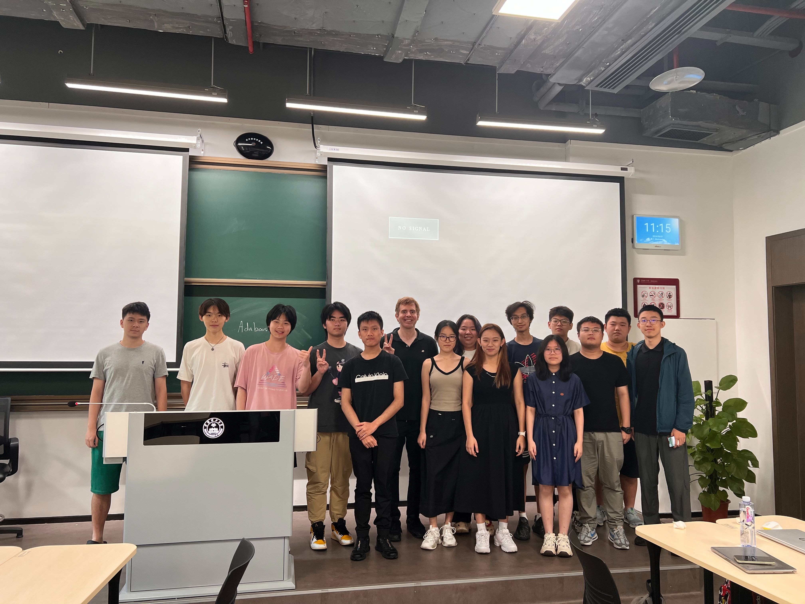
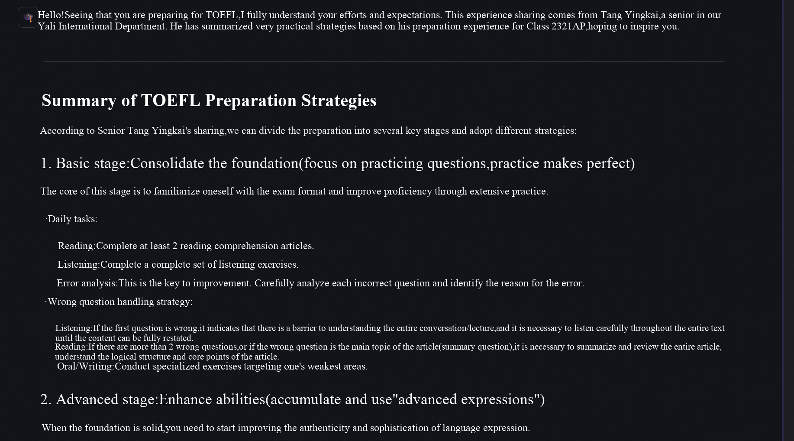

Exploring AI, Data, and Community Contributions.
During my first year of high school, I participated in a CIS research project focusing on artificial intelligence and big data. It was one of my earliest explorations into the field of AI. At that time, I found that many AI theories were extremely challenging -- concepts that I had never encountered in my regular classes. Furthermore, everyone else in the group seemed to grasp these concepts effortlessly, while I alone felt completely lost and unable to keep up with the professor's lectures. So I decided to teach myself.
I browsed Bilibili, CSDN, and GitHub for instructional videos, technical blogs, and open-source code. Since most tutorials were designed for college students, I often had to look up the underlying concepts they assumed I already understood. If I cannot understand one tutorial, I'd switch to another. After jumping around, it was often a very...obscure...video with only few views that saved me. Sometimes, I was the first person to watch a video. Many times, a small point that our professor casually mentioned in class would require me to spend hours researching from scratch just to grasp it. Whenever I decided to study, I had to prepare to work until 2 a.m. (OK, maybe not that early.)
Then came the real challenge. After finishing the professor's course, my group chose to research improving recommendation systems. I had to dive into English paper reading and writing for the first time. My browser was constantly open to ChatGPT, Bing, and dozens of tabs with specialized terms. It was exhausting, but looking back on that experience now, I feel it was well worth it, as it greatly cultivated my self-learning, research, and writing skills.
Our paper of this project was successfully pubished. The PDF copy is available here I am interested in artificial intelligence (AI), so I started an AI club called the "Intech Association" at my school. I taught the members some basic AI concepts, such as retrieval-augmented generation of LLMs, feed-forward neural networks, and convolutional neural networks, in a way that high school students could understand, of course, minimizing the math as much as possible because everyone's here to relax and have fun.
I also led the development of several interesting club projects, such as emotion analysis, YOLO, which identifies everything as a dog, and an FNN-based block guessing game. By the way, the avatar on the front page is an anime character that my friend and I designed for our club.
I made a website for our club, available hereThrough the club, I hope to further my knowledge of AI. To learn more about attention mechanism, I built a decoder-only transformer with PyTorch from scratch for text generation. I learned about transformer principles during an AI-related research program, but I had never tried to implement them. Later, I realized that, given the rise of large language models, I need a better understanding of transformers, so I decided to create one.
With the help of ChatGPT and online tutorials, I successfully built a transformer based on multi-head attention(MHA) and it is surprisingly functional. However, lacking training materials, high-quality GPUs, and datasets, it cannot generate logical texts. Therefore, I came up with the idea that it does not need to generate logical articles but rather humorous nonsense that conforms to modern "brain-rot culture." I collected many "brain rot" sentences online and used them as a training dataset for my transformer. Despite the relatively high loss and the "funny" training data, the transformer performs well on "brain-rot text" generation tasks. So I named it "Brain rot GPT".
Not satisfied with barely implementing a decoder-only transformer, I started to consider the problem that currently deploying transformer-based generation AI on personal devices can be difficult, since incuring large computational overheads can be challenging to most of personal devices. Therefore, I tried to improve the efficiency of attention structure to make my model more device-friendly.
Searching online, I found an improvement to the traditional multi-head attention (MHA) structure: grouped-query attention (GQA). GQA uses less graphics memory than MHA. Based on this, I applied an apparently radical optimization method that reduces the hidden dimension to lower computational costs. So far, although some research is similar, I have not found any improvements that are exactly the same as this one. I think it is reasonable to name this new structure "grouped-query latent attention (GQLA)." It is surprisingly effective. It became the basis of the second version of my Brain-Rot GPT. I successfully deployed it on a CPU, and it ran smoothly.
To evaluate this new attention structure, I conducted experiments to compare the models made from GQLA and the traditional GQA. Memory consumption, cosine similarity between attention patterns, and absolute value of difference of mean diagonal attention were considered. The results showed that, compared to GQA-based models, GQLA models are capable of using less time and memory while retaining most expressive capabilities. Please check out my paper below for more information.
The codes of brain rot GPT are available hereAs a by-product of the brain rot GPT, I open-sourced the video recognition tool that I wrote to extract video scripts and add them to my training dataset. This tool is based on the multimodal large language model GLM4.6V-Flash. Unlike most existing video recognizers, which rely on basic speech recognition of video audio, my LLM-based tool can analyze both subtitles and audio, providing far more accurate results. Another advantage is that subtitle analysis enables the tool to recognize new internet slang that traditional tools can hardly grasp.
The codes of the tool are available hereInspired by the AI college admissions counselor, I developed an AI study guide for students and teachers in our school(Yali High School International Department, YLID). I applied retrieval augmented generation (RAG) to a large language model (LLM). This technology enables the model to respond to user queries using information from the knowledge base. I built the knowledge base using materials including guides on college selection, test and competition preparation instructions, and school club information, all of which were provided by our school.
Therefore, this AI assistant can reference our school's information and provide responses as if it were an employee of the school. I also integrated the college research function. Users can input the official website of a university, and the AI tool will search the website and summarize the information. Unfortunately, this project contains confidential information, so I cannot show it here.
In addition, to improve my understanding and skills in computer science, I became a teaching assistant for our school's AP Computer Science A course, solving students' problems and providing homework explanations and reviews.
Studying biostatistics and epidemiology in the Harvard Summer Program opened my eyes to the application of statistics in health. After the program, I began conducting real-world research. I joined a study investigating the correlation between diabetes and the risk of developing cardiovascular diseases (CVD). I used medical data from the CHARLS dataset and defined CVD as the outcome variable. Unlike the ideal situation in Harvard courses, these data required more complex methods to clean and normalize. I applied Cox regression, first univariable and then multivariable. After calculating the C-index for validation, I observed an increase in the C-index, indicating an increase in the model's discriminative ability. Through this experience, I learned the importance of considering multiple covariates to better adapt to real-world situations.